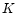

Gaussian Statistics and Unsupervised Learning
A Tutorial for the Course Computational Intelligence
This tutorial presents the properties of the Gaussian probability
density function. Subsequently, supervised and unsupervised pattern
recognition methods are treated. Supervised classification algorithms
are based on a labeled data set. The knowledge about the class
membership of this training data set is used for the classification of
new samples. Unsupervised learning methods establish clusters from an
unlabeled training data set. Clustering algorithms such as the
-means, the EM (expectation-maximization) algorithm, and the
Viterbi-EM algorithm are presented.
To make full use of this tutorial you have to
- download the file
Gaussian.zip
which contains this tutorial in
printable format (PDF
and
ps.gz) and the accompanying Matlab
programs.
- Unzip Gaussian.zip which will generate a
subdirectory named Gaussian/matlab where you can find
all the Matlab programs.
- Add the path Gaussian/matlab to the matlab search path,
for example with a command like
addpath('C:\Work\Gaussian\matlab') if you are using a Windows
machine, or by using a command like
addpath('/home/jack/Gaussian/matlab') if you are on a
Unix/Linux machine.
This tutorial is based on
- EPFL lab notes
``Introduction to Gaussian Statistics and Statistical Pattern
Recognition'' by Hervé Bourlard, Sacha Krstulovic, and Mathew
Magimai-Doss.